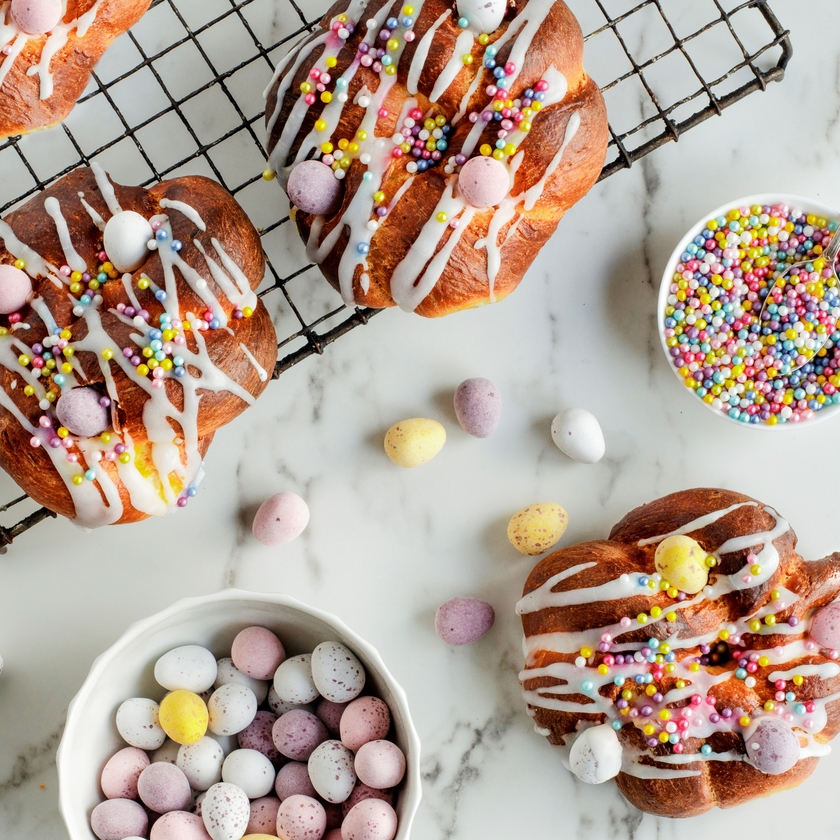
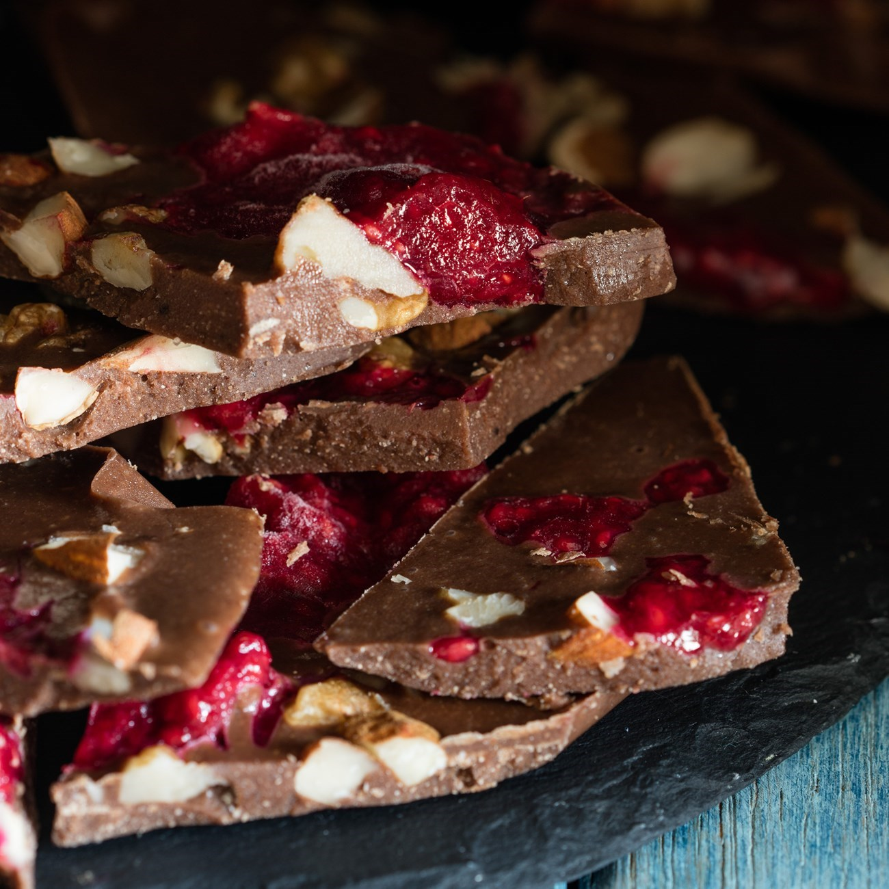
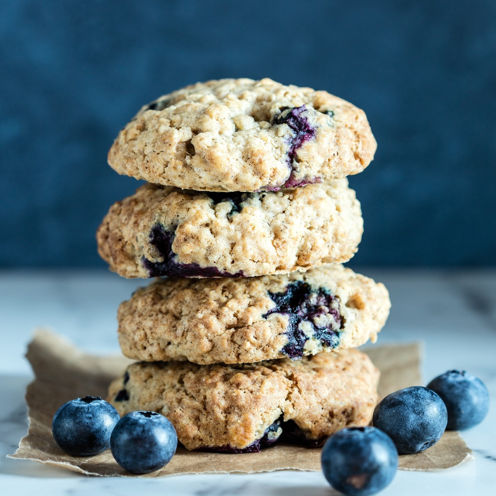
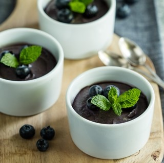

Easter Bread
Vegan Rasberry Bark
Blueberry Oat Cookies
Vegan Blueberry Mousse Pots
Vegan Food Flavours
There are hundreds of vegan flavours to choose in the market. Delicious flavours that fit the needs of the vegans are created on daily basis.There are fruit flavours,vegetable, nut and vanilla essense
Vegan Food Colors
There are many vegan food colors which can be made at home.These can be made from simple ingredients like turmeric, beets, green apple, purple cabbage etc.
Vegan Sprinkles & Sparkles
The vegan sprinkles are helpful in decorating these desserts like Cupcakes, Ice Creams and Cakes. These are made from ingredients like vegan powdered sugar, organic tapioca starch and organic pea protien
| Number | Benefits | Health Details |
|---|---|---|
| 1 | It is richer in nutrients | Fiber,Antioxidants,Pottassium,Magnesium |
| 2 | Helps in losing weight | Supports building lower BMI |
| 3 | Lowers Blood Sugar Levels | Improved kidney function |